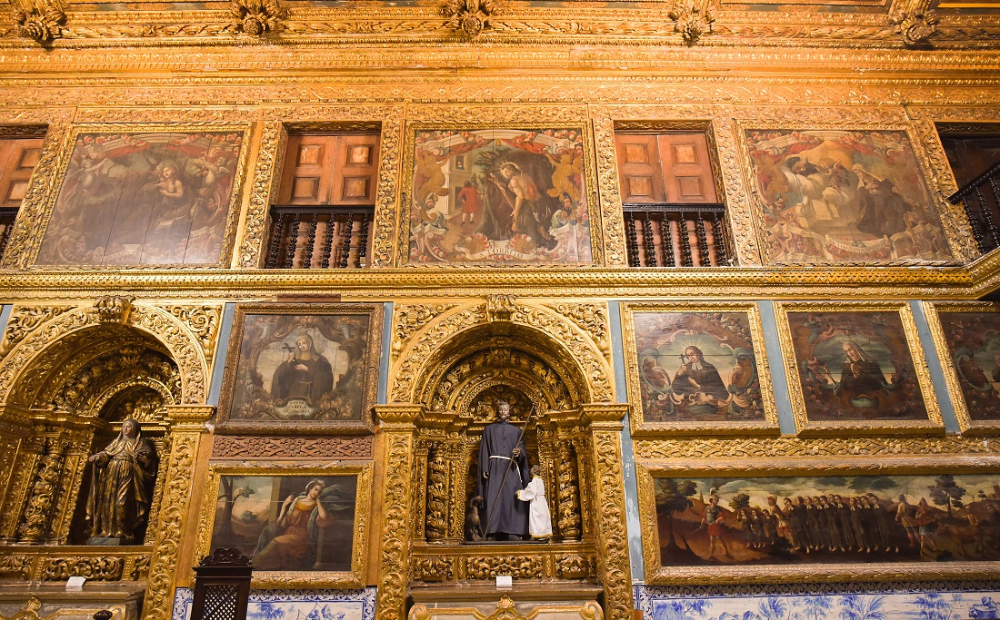

História
Recife é considerado o primeiro polo gastronômico do Nordeste, o segundo polo médico do Brasil, além de abrigar o maior parque tecnológico do País, conhecido como Porto Digital.
Ela recebe turistas o ano inteiro, mas seu fluxo maior de visitantes ocorre no verão. Isso se deve pois ocorre muitas chuvas no período do inverno, desfavorecendo os passeios ao ar livre e banhos de mar.
Não deixe de conhecer
Reserve ao menos um dia para caminhar pelo Recife Antigo e visitar locais que estão na mesma área, como o Marco Zero - onde tem início a contagem oficial de distâncias -, o novo Mercado de Artesanato, a Rua do Bom Jesus e seus edifícios coloridos, a Embaixada dos Bonecos Gigantes, o Centro Cultural Judaico e a Torre Malakoff.

Atravessando a Ponte Buarque de Macedo será fácil conhecer a Capela Dourada, possivelmente a igreja mais bonita do Recife, construída entre os séculos XVII e XVIII e toda coberta por ouro em seu interior. Tente também ir ao Forte das Cinco Pontas e à Casa da Cultura, onde funcionava uma prisão e hoje há lojinhas de artesanato.
Para quem gosta de centros urbanos com diversas opções de pontos turísticos tem grandes chances de se apaixonar pela Recife. Para deixar a viagem ainda mais interessante, não dá para deixar Olinda fora do roteiro. A cidade vizinha do Recife possui um dos centros históricos mais famosos do país e igrejas que são verdadeiras obras-primas.